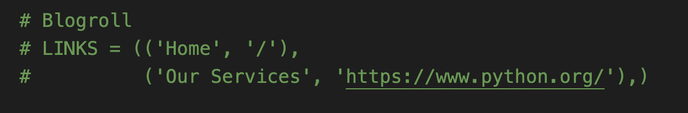

- Mon 26 July 2021
- side project
- Jolene Yu
- #pelican, #html
Continue from the first step, this one will show some custom settings on your website, which includes adding new pages with images, and menu modification.
Let's go:
Add a new page - Open your terminal, create a directory "pages" under "content", and create a Markdown file yourpage.md.
$ cd ~/Desktop/yoursitename/content
$ mkdir pages
$ touch pages/yourpage.md
Edit the new page - Open your code editor, and modify the page as you like. Metadata syntax for Markdown posts should follow the pattern below. More metadata description can be found here
Title: About me
Date: 2021-07-26 14:04
Modified: 2021-07-26 15:05
Category: About
Tags: pages
Slug: about-me
Authors: Jolene Yu
Summary: Information about me
This is the page of my super blog post.
Add a cover to your page - Create a directory "images" under "content", and put the image you are happy to use in that directory. You can add a line to yourpage.md, starting with an exclamation mark (!), followed by alt text in brackets, and the path or URL to the image asset in parentheses. You can optionally add a title after the URL in the parentheses.

But the image won't automatically zoom in & out when the page size changes. Luckily, you could just use some HTML in your Markdown, so I add the line below.
<img alt="image info" src="./images/name.jpg" data-action="zoom" width="70%">
Or you could use a custom CSS file to do the same, but it involves making modification to the "themes" directory which I try to aviod. You could explore more here
Clean the menu links - Use VS code global search with the short cut "cmd+shift+f" to locate the menu links setting. It's in the LINKS section of pelicanconf.py, you can modify the links where to redirect or simply remove them. I commented them out since I might use them later on.

Lessons-Learned:
-
I haven't used markdown, html or css before. It took me a while to figure out how markdown works. Follow the official instruction first, and if it's not working, break down the error and locate the real issue.
-
Pages or Articles are edited in a similar way. I created my blogs in a seperate directory "/content/articles". Here is a Markdown format documentation for you to read if you need to modify pages or articles later: Markdown